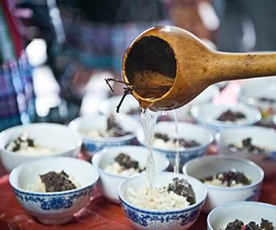
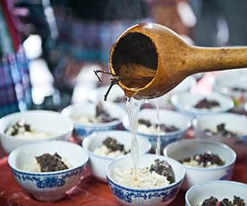
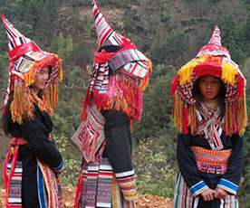
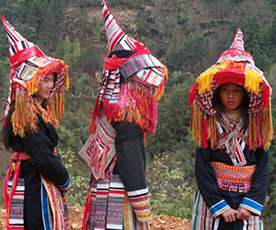
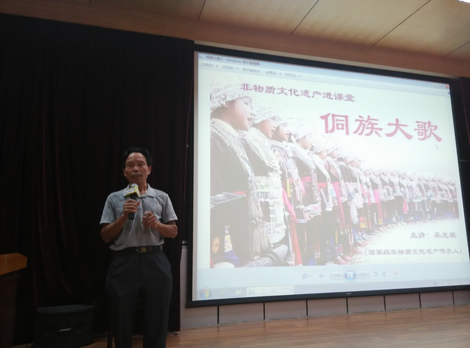

-

不懂怎么运用VR?看看故宫怎么玩
-

《刘三姐》组曲在美国奏响
-

自治区成立60周年港澳系列文化活动
-
建筑风情
-
饮食文化
-
服饰特色
桂林逍遥楼
柳州文庙
广西干栏房
桂林逍遥楼
柳州文庙
广西干栏房


三月三五彩糯米饭
侗乡打油茶
横县鱼生
三月三五彩糯米饭
侗乡打油茶
横县鱼生
 

传统壮族服饰
贺州尖头瑶
融水苗族
传统壮族服饰
贺州尖头瑶
融水苗族
 

-
桂南采茶戏——陈声强

陈声强，男，汉族，1947年3月生，中专文化，国家三级演员，玉林市博白县文化馆馆长，已退休。2008年被命名为第二批国家级项目“桂南采茶戏”自治区级代表性传承人。
在剧团工作期间，曾培养过很多表演人才。 1998年又调任博白县文化馆馆长。离开剧团后的陈声强利用工作之余，接收了余晓东、庞东海、吕光东等几位年青演员作为培养对象。退休后，他接受剧团的邀请，回团继续培训桂南采茶接班人，为桂南采茶戏的繁荣兴旺贡献自己的力量。
-
坭兴陶烧制技艺——李人帡

李人帡，男，汉族，1946年3月生，大专文化，广西钦州坭兴陶艺有限公司高级工艺美术师。2009年被命名为第三批国家级项目“钦州坭兴陶烧制技艺”自治区级代表性传承人。
钦州坭兴陶陶艺传承艺人从咸丰年胡老六开始，从艺以来，李人帡先后举办六十多次技艺培训班，自己编印有关陶瓷艺术，生产工艺和具有操作体会的资料，培养了陈仁辉、宋国旭、吕朝春、刘达京以及钦州学院2006、2007两届陶瓷专业本科生共108人等，其中四十多名成为优秀技艺人才和生产能手。
-
侗族大歌——吴光祖
吴光祖，男，侗族，1944年4月生，初中文化，农民，三江侗族自治县梅林乡新民村第六组人。2008年被命名为第二批国家级项目“侗族大歌” 自治区级代表性传承人。“侗族大歌”是无伴奏、无指挥、多声部的民间音乐。它以其优美的旋律、悦耳动听的节奏、浓郁的侗族文化底蕴，博得了国内外专家学者的称赞，引起了国内外音乐界的广泛关注。
吴祖光从小酷爱文艺，师承吴启瑞、吴公斋，1952年开始学唱“侗族大歌”、“侗戏”、“侗族琵琶歌”等民间音乐。多年来，他在一边向老歌师请教学习和组织文艺队开展活动的同时，一边利用休息时间无偿向青少年传授侗族民间音乐。